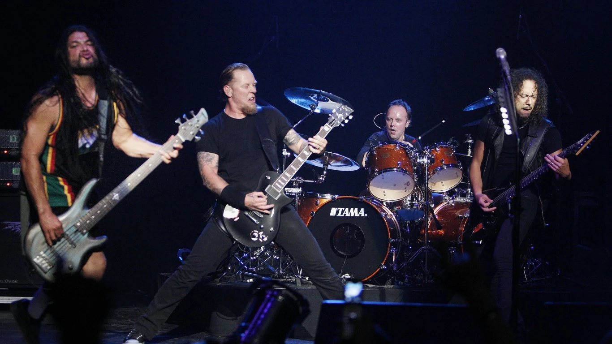

Rock musicians in the mid-1960s began to advance the album ahead of the single as the dominant form of recorded music expression and consumption, with the Beatles at the forefront of this development. Their contributions lent the genre a cultural legitimacy in the mainstream and initiated a rock-informed album era in the music industry for the next several decades. By the late 1960s "classic rock" period, a number of distinct rock music subgenres had emerged, including hybrids like blues rock, folk rock, country rock, southern rock, raga rock, and jazz rock, many of which contributed to the development of psychedelic rock, which was influenced by the countercultural psychedelic and hippie scene. New genres that emerged included progressive rock, which extended the artistic elements, glam rock, which highlighted showmanship and visual style, and the diverse and enduring subgenre of heavy metal, which emphasized volume, power, and speed. In the second half of the 1970s, punk rock reacted by producing stripped-down, energetic social and political critiques. Punk was an influence in the 1980s on new wave, post-punk and eventually alternative rock.
The sound of rock is traditionally centered on the amplified electric guitar, which emerged in its modern form in the 1950s with the popularity of rock and roll. Also, it was influenced by the sounds of electric blues guitarists. The sound of an electric guitar in rock music is typically supported by an electric bass guitar, which pioneered in jazz music in the same era, and percussion produced from a drum kit that combines drums and cymbals. This trio of instruments has often been complemented by the inclusion of other instruments, particularly keyboards such as the piano, the Hammond organ, and the synthesizer. The basic rock instrumentation was derived from the basic blues band instrumentation (prominent lead guitar, second chordal instrument, bass, and drums). A group of musicians performing rock music is termed as a rock band or a rock group. Furthermore, it typically consists of between three (the power trio) and five members. Classically, a rock band takes the form of a quartet whose members cover one or more roles, including vocalist, lead guitarist, rhythm guitarist, bass guitarist, drummer, and often keyboard player or other instrumentalist.
The foundations of rock music are in rock and roll, which originated in the United States during the late 1940s and early 1950s, and quickly spread to much of the rest of the world. Its immediate origins lay in a melding of various black musical genres of the time, including rhythm and blues and gospel music, with country and western. In 1951, Cleveland, Ohio disc jockey Alan Freed began playing rhythm and blues music (then termed "race music") for a multi-racial audience, and is credited with first using the phrase "rock and roll" to describe the music.
Debate surrounds the many recordings which have been suggested as "the first rock and roll record". Contenders include Wynonie Harris' "Good Rocking Tonight" (1948); Goree Carter's "Rock Awhile" (1949); Jimmy Preston's "Rock the Joint" (1949), which was later covered by Bill Haley & His Comets in 1952; and "Rocket 88" by Jackie Brenston and his Delta Cats (in fact, Ike Turner and his band the Kings of Rhythm), recorded by Sam Phillips for Sun Records in 1951. Four years later, Bill Haley's "Rock Around the Clock" (1955) became the first rock and roll song to top Billboard magazine's main sales and airplay charts, and opened the door worldwide for this new wave of popular culture.
Amidst the COVID-19 pandemic, the virus brought extreme changes to the rock scene worldwide. Restrictions, such as quarantine rules, caused widespread cancellations and postponements of concerts, tours, festivals, album releases, award ceremonies, and competitions. Some artists resorted to giving online performances to keep their careers active. Another scheme to circumvent the quarantine limitations was used at a concert of Danish rock musician Mads Langer: the audience watched the performance from inside their cars, much like in a drive-in theater. Musically, the pandemic led to a surge in new releases from the slower, less energetic, and more acoustic subgenres of rock music. The industry raised funds to help itself through efforts such as Crew Nation, a relief fund for live music crews organised by Livenation.
At the start of the 2020s, recording artists in both pop and rap music released popular pop-punk recordings, many of them produced or assisted by Blink-182 drummer Travis Barker. Representing a commercial resurgence for the genre, these acts included Machine Gun Kelly, Willow Smith, Trippie Redd, Halsey, Yungblud, and Olivia Rodrigo. The popularity of the social media platform TikTok helped spark nostalgia for the angst-driven musical style among young listeners during the pandemic. Among the most successful of these releases have been Machine Gun Kelly's 2020 album Tickets To My Downfall, which topped the Billboard 200, and Rodrigo's number-one hit single "Good 4 U" (2021).
Different subgenres of rock were adopted by, and became central to, the identity of a large number of sub-cultures. In the 1950s and 1960s, respectively, British youths adopted the Teddy Boy and Rocker subcultures, which revolved around US rock and roll. The counterculture of the 1960s was closely associated with psychedelic rock. The mid-late 1970s punk subculture began in the US, but it was given a distinctive look by British designer Vivienne Westwood, a look which spread worldwide. Out of the punk scene, the Goth and Emo subcultures grew, both of which presented distinctive visual styles.
When an international rock culture developed, it supplanted cinema as the major sources of fashion influence. Paradoxically, followers of rock music have often mistrusted the world of fashion, which has been seen as elevating image above substance. Rock fashions have been seen as combining elements of different cultures and periods, as well as expressing divergent views on sexuality and gender, and rock music in general has been noted and criticised for facilitating greater sexual freedom. Rock has also been associated with various forms of drug use, including the amphetamines taken by mods in the early to mid-1960s, through the LSD, mescaline, hashish and other hallucinogenic drugs linked with psychedelic rock in the mid-late 1960s and early 1970s; and sometimes to cannabis, cocaine and heroin, all of which have been eulogised in song.